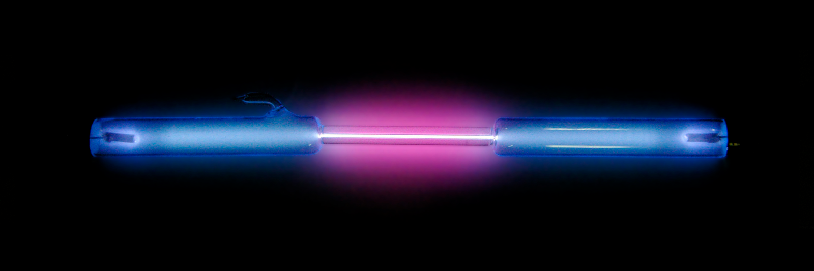

Fizyka Atomowa
Widmo liniowe emisyjne i absorpcyjne
Widma emisyjne
Światło emitowane przez rozrzedzone gazy składające się z pojedynczych atomów ma inny charakter niż promieniowanie termiczne ciał stałych.
Fot 3.1. Świecenie wzbudzonych gazów szlachetnych
Widmo promieniowania gazów jest widmem liniowym. W przeciwieństwie do widma rozgrzanych ciał stałych (poprzedni temat). Oznacza to, że emitowane jest światło o określonych długościach fal. Jeśli takie światło rozszczepimy, np. w pryzmacie, na ekranie zobaczymy pojedyncze linie. Przykładowe widmo liniowe emitowane przez atomy helu przedstawiono na fot 3.2.
Fot 3.2 Przykładowe widmo helu
Każdy pierwiastek ma inne widmo liniowe, które pozwala na jego jednoznaczną identyfikację.

Rys 3.1 Widma niektórych gazów
Powyższa grafika przedstawia widmo powstałego podczas badania promieniowania dla wodoru, helu, neonu i par rtęci. Na podstawie wyników tych badań stwierdzono, że widmo tego promieniowania jest nieciągłe, tzn. występują w nim tylko niektóre długości fali. Takie widmo nazywamy widmem liniowym (dyskretnym lub nieciągłym). Warto wspomnieć, że istotną rolę w badaniach nad tym zjawiskiem odegrali fizycy Gustav Kirchhoff i Robert Bunsen.
Widmo promieniowania wodoru
Widmo emisyjne wodoru uzyskane po raz pierwszy przez A. Angstrema w 1853 r. odegrało ważną rolę w zrozumieniu mechanizmu powstawania widm.
Atomy wodoru znajdujące się pomiędzy naładowanymi różnoimiennymi płytkami świecą:
Fot 3.3 Lampa wodorowa
Światło to po przejściu przez pryzmat ulega rozszczepieniu. Widmo tego promieniowania przedstawia Rys 3.2.
Rys 3.2. Widmo wodoru
Początkowo w widmie wodoru zaobserwowano wyraźne 4 linie :
- czerwoną o długości 656,28 nm
- jasnoniebieską o długości 486,13 nm
- fioletową o długości 434,05 nm
- fioletową o długości 410,12 nm
Johann Jakub Balmer w 1885 r. analizował widmo promieniowania wodoru. Zauważył, że w obszarze widzialnym widma częstotliwości fal wykazują ciekawą zależność. Wyraża się ją wzorem Balmera-Rydberga:
| `ν=R(1/2^2−1/n^2)`* |
|---|
gdzie n to dowolna liczba całkowita większa od 2 (n=3,4,5,…).
Długości tych fal możemy wyznaczyć ze wzoru:
| `λ=c/ν` |
|---|
Stała R ma wartość: `R=3,28985 10 ⋅1015s−1
W późniejszych latach wykryto istnienie innych serii widmowych wodoru, leżących w nadfiolecie i podczerwieni. Częstotliwości fali we wszystkich seriach widmowych można przedstawić za pomocą jednego wspólnego wzoru:
| `ν=R(1/k^2−1/n^2)` * |
|---|
gdzie k i n są liczbami naturalnymi. Liczba k odpowiada kolejnemu numerowi serii. Dla serii o określonym k liczba n przyjmuje wartości: n=k+1,k+2,…
Widmo absorpcyjne
Jeśli światło o ciągłym widmie przechodzi przez chłodny gaz, to w jego widmie na ciągłym kolorowym tle widoczne są ciemne linie. Są to linie widma absorpcyjnego.
Absorpcja to inaczej pochłanianie. Widmo absorpcyjne to widmo otrzymane w wyniku pochłaniania przez atomy padającego na nie światła.
Gdy gaz oświetlimy światłem o widmie ciągłym, atomy gazu będą pochłaniać fotony o energiach charakterystycznych dla atomów gazów danego pierwiastka, o takiej samej długości jak same emitują. Na rysunku 3.4 pokazano widmo absorpcyjne helu otrzymane, gdy światło o widmie ciągłym przepuszczono przez chłodny gazowy hel, a następnie rozszczepiono.
Rys 3.3.
W widmie światła słonecznego występuje wiele linii absorpcyjnych. Są to tak zwane linie Fraunhofera (Rys 3.4). Każda z nich wskazuje na obecność w atmosferze słonecznej (lub ziemskiej) jakiegoś pierwiastka. W ten sposób odkryto, że w atmosferze słonecznej występuje między innymi hel.
Rys 3.4.
Analiza widmowa ma duże znaczenie w astronomii – badanie właściwości i składu chemicznego ciał niebieskich. Dzięki analizie widmowej możliwe jest także określenie, czy gwiazda zbliża się do obserwatora, czy też się od niego oddala. Metoda ta powszechnie jest również stosowana w geologii i mineralogii do oceny zawartości pewnych pierwiastków w wodzie, rudach czy minerałach oraz do badania związków organicznych. Wykorzystujemy ją w ekologii, kryminalistyce, medycynie itd.
Rozwiązanie:
- Fałsz
- Fałsz
- Prawda
Bibliografia
http://ilf.fizyka.pw.edu.pl/podrecznik/1/2/3https://www.ekologia.pl/wiedza/slowniki/leksykon-ekologii-i-ochrony-srodowiska/neon
http://www.pracownia.ifd.uni.wroc.pl/html/optyka/foto/cw66widmo.html
https://epodreczniki.pl/a/zjawisko-emisji-i-absorpcji-energii-przez-atomy-gazu/DWdYQ7QkI
https://pl.wikipedia.org/wiki/Wod%C3%B3r
https://sciaga.pl/tekst/63849-64-analiza_widmowa_i_jej_zastosowanie
Podręcznik: Fizyka z tangramem dla szkół ponadgimnazjalnych 2012 r Joanna Gondek